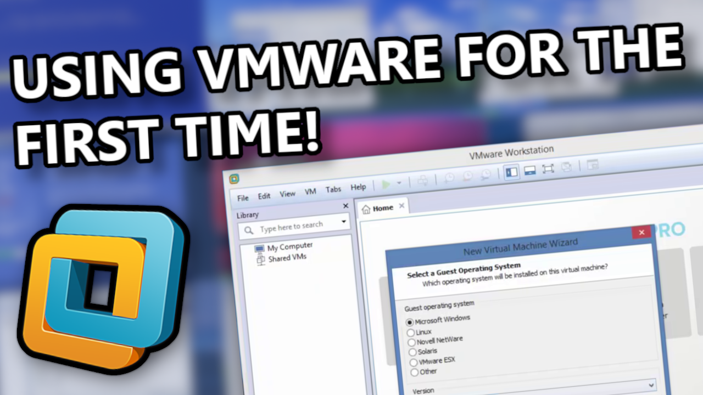

A VMware First-Timer installs Windows XP!
A VMware First-Timer installs Windows XP! is the first public StuffyXP video by Lexibyte. It was uploaded to YouTube on 13 February 2024 and had a total view count of 548 views before the StuffyXP channel was deleted on 14 March 2025.
The video consisted of Lexibyte installing Microsoft Windows XP Professional Service Pack 3 on VMware Workstation Pro 12 in their Windows 8.1 host. It is also the first StuffyXP video to be made on TheCeleryPC, as well as the first StuffyXP video of 2024.
Addionally, 2 YouTube Shorts were uploaded to the StuffyXP channel showing a sneak peak of the video, with an audio bug from the video editor, another one is the analytics of the video as of 2 days later (citation needed).
Development
Shortly after 2024 started (and Lexibyte finding their friend group), Lexibyte was inspired by them [the friend group] to also make their own tech videos on YouTube, shortly after that, they started to find a video editor that is compatible with their daily driver at the time, TheCeleryPC.
Lexibyte chose Camtasia Studio 8 after recalling that FlyTech Videos used it in some of their videos as well, Lexibyte continued to use the program until The forgotten Windows Competitor… came out, as Geometry Dash… on Windows Vista!? was edited with DaVinci Resolve on Thei5Lappy up until the last StuffyXP video.
After finding the program, they started the recording and edited the video, unfortunely the video file ended up being corrupted per-se, as Camtasia wrongfully thought that the video file was from an older version of Camtasia and had to be upgraded, after the ““upgrade””, the file was blank. This made the video be delayed from 8 January to 14 January. It then happened again on 16 January, delaying the video even further to 26 January.
The video was delayed again in 28 January due to Lexibyte bricking their Windows 8.1 installation, causing them to enhance and re-add several parts of the video in their Windows Vista installation, after that, the power outlet that powered TheCeleryPC died and had to be replaced, causing the video to be delayed for almost a week. Lexibyte upgraded to Windows 7 1 day before the video was uploaded.
The video was made within 3 Windows versions:
- Windows 8.1: Recording & editing most of the video
- Windows Vista: Editing & enhancing the final parts of the video, thumbnail
- Windows 7: Uploading the video.
Collab effects
Shortly before the Lexibyte-Clyron collab was uploaded, several StuffyXP and Lynxmic videos’ thumbnails were updated in order to fit with the new thumbnails designed in the video, A VMware First-Timer installs Windows XP! was one of those videos.
Alongside the thumbnail, the video’s description was updated to fit with the recent video’s description style, a notice telling the viewer that the video is an old video of them and that other better videos are on the platform was also added.
(please watch my newer videos as they’re 1000x better than this one, hey i had to start somewhere…)
- The notice

The remade thumbnail designed in the Lexibyte-Clyron collab